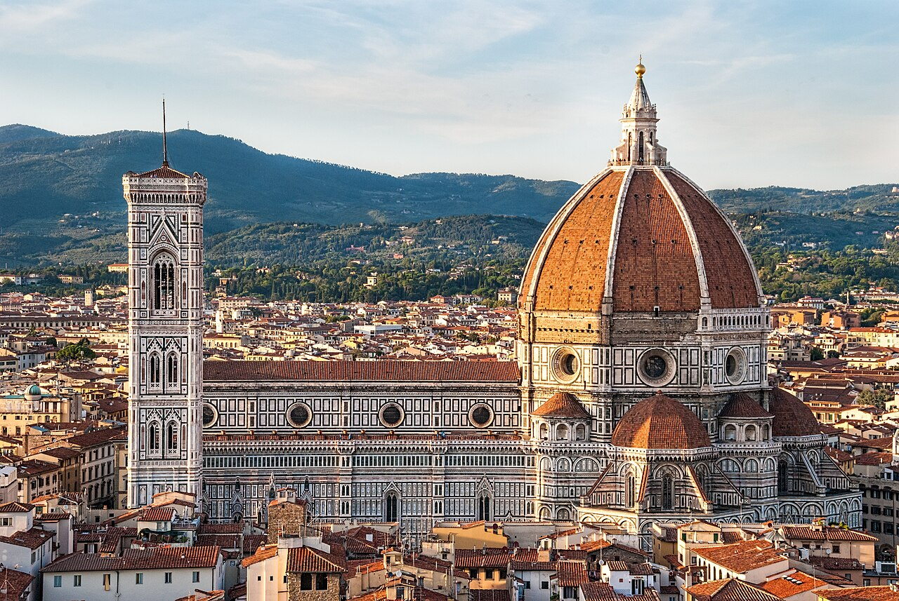

Prendi una strada laterale
Scopri luoghi, sapori e passeggiate. Esplora le proposte, scegli un tour oppure componi il tuo giorno con le tappe che ti interessano.


Esplora le esperienze
Guarda tutte le proposte, cerca un luogo o scegli un interesse.
Per esempio museo, mercato o giardino. Gli interessi sono facoltativi.
Tempo, costo e zona
Durate indicative; costo e accessibilità sono indicati solo quando documentati.
Il tuo tour, fuori dalla cartolina
Scegli tempo, interesse e preferenza per tappe al coperto.
In viaggio, senza perdere tempo
Info pratiche
Muoversi
Pianifica gli spostamenti sul sito ufficiale del trasporto locale: linee, orari, tariffe e accessibilità possono cambiare.
Quando andare
Controlla meteo, calendario degli eventi e condizioni dei percorsi per le date del viaggio. L’affluenza varia: nessuna fascia oraria garantisce assenza di code.
Prenotare
Per musei, spettacoli, corsi e attività scegli prima una data e verifica disponibilità, tariffe e condizioni sul sito del gestore. Gli itinerari sono proposte, non prenotazioni.